Contents
Heading
load projIA; close all; clc; load projIA.mat
1.
%converting coefficients to second order section [ss,gn] = tf2sos(b,a); %realizing filter hd_df1 = dfilt.df1(b,a); %plotting impulse response for respective filters figure; [impResp,t] = impz(hd_df1); plot(t, impResp) title('Direct Form I Impulse Response') %plotting frequency response for respective filters figure; [h,w] = freqz(hd_df1); plot(w/pi, 20*log10(abs(h))) ylabel('magnitude (dB)') xlabel('Normalized Frequency ( X pi rad / sample)') title('Direct Form I Frequency Response') %plotting group delay for respective filters figure; [gd,w] = grpdelay(hd_df1); plot(w/pi, gd) xlabel('Normalized Frequency ( X pi rad / sample)') ylabel('Group Delay') title('Direct Form I Group Delay')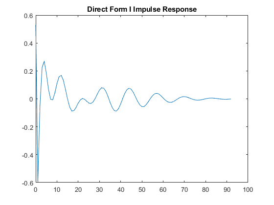 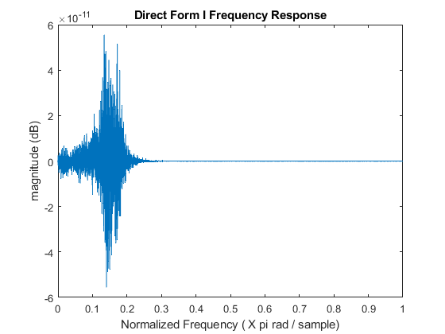 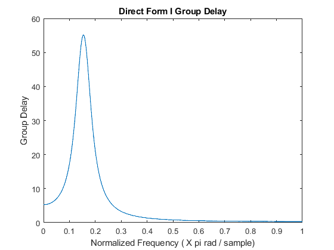
2.
zplane(hd_df1);
title('Direct Form I Pole-Zero Plot')
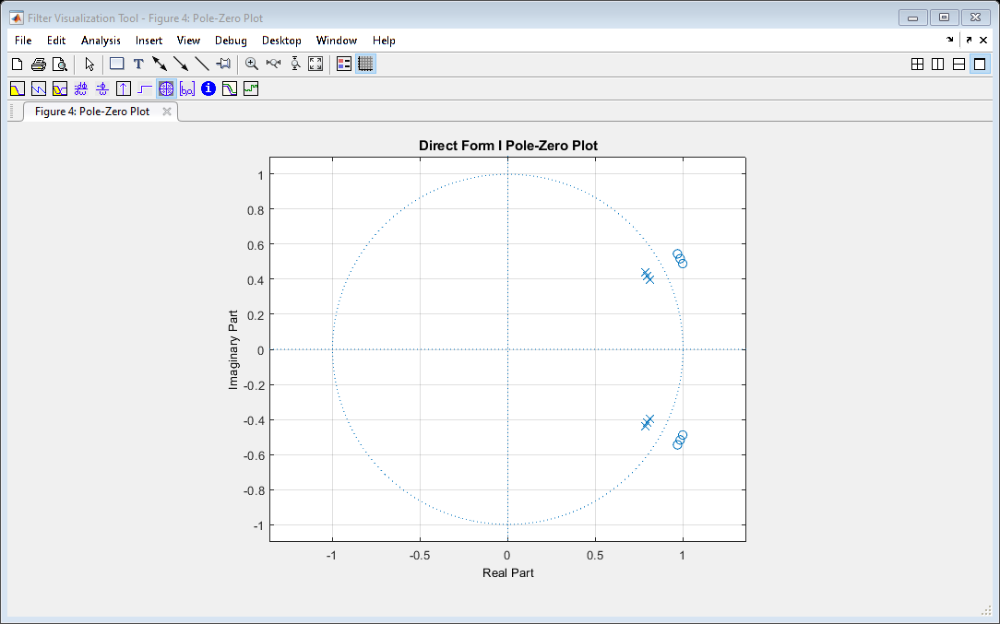 3.
x = filter(hd_df1,speech); audiowrite('un_distorted_sound.wav', x , 11025) %don't hear any distortion at this step. man's voice says "that noise %problem grows more annoying each day"
4.
DF1
N = 50;
hd_df1_new = cascade_filter(hd_df1,N);
graph_appropriate_figures(hd_df1_new, "DF1", N)
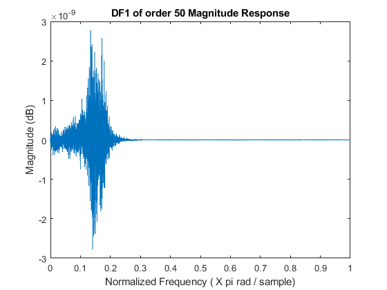 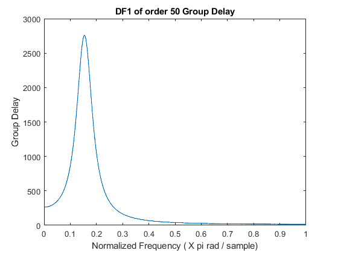 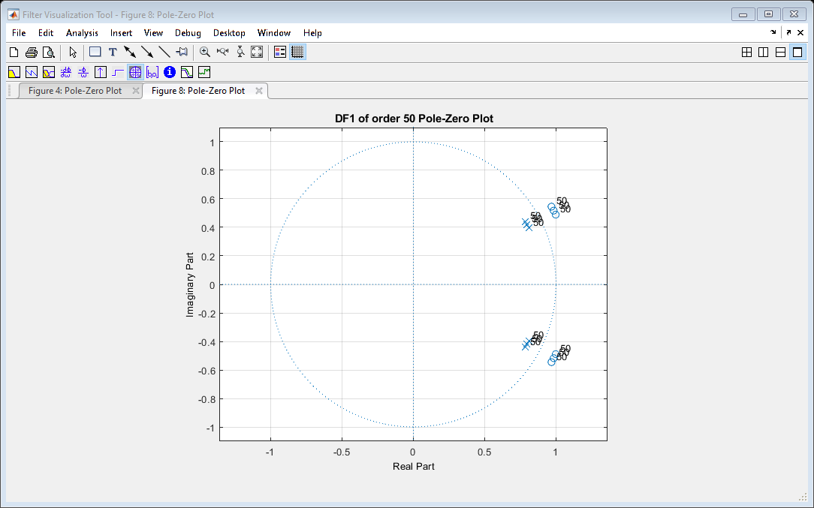 DF1 SOS
hd_df1sos = dfilt.df1sos(ss,gn); hd_df1sos_new = cascade_filter(hd_df1sos,N); graph_appropriate_figures(hd_df1sos_new, "DF1 SOS", N) %sound is seriously distorted. great sign!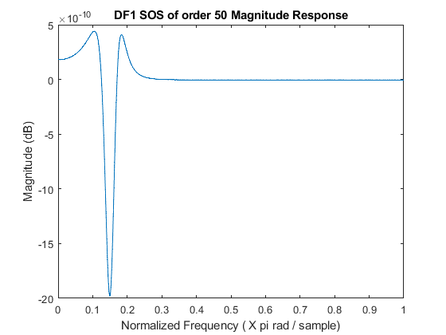 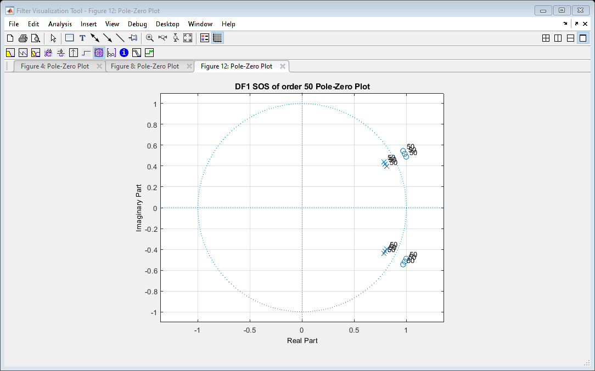
DF2 SOS
hd_df2sos = dfilt.df2sos(ss,gn);
hd_df2sos_new = cascade_filter(hd_df2sos,N);
graph_appropriate_figures(hd_df2sos_new, "DF2 SOS", N)
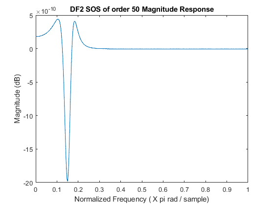 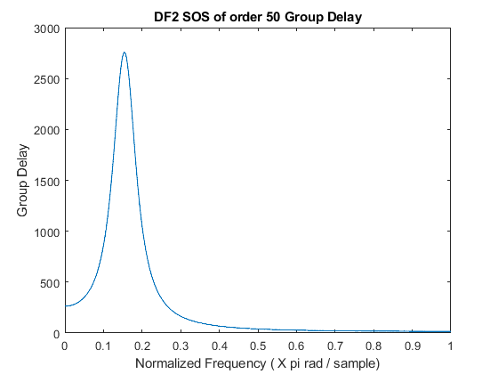 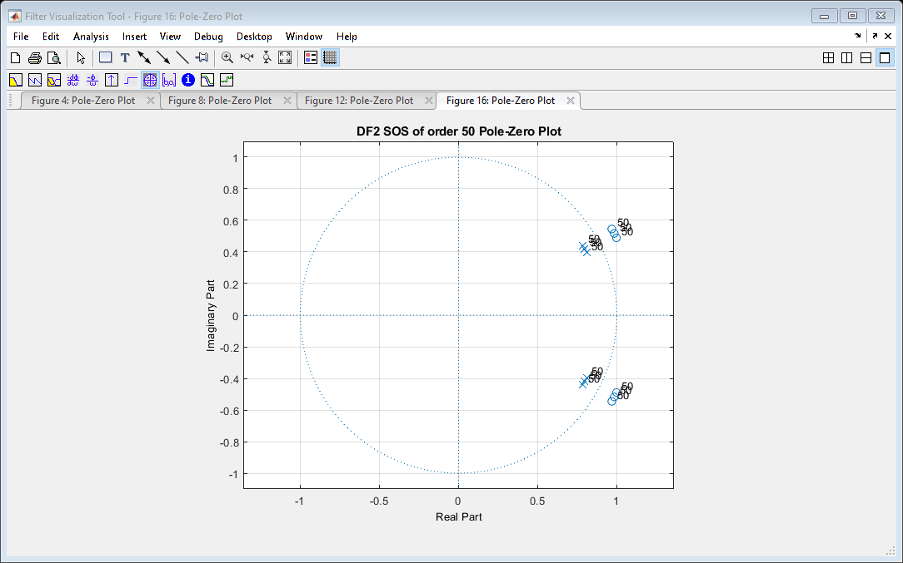 DF2 Transposed SOS
hd_df2tsos = dfilt.df2tsos(ss,gn);
hd_df2tsos_new = cascade_filter(hd_df2tsos,N);
graph_appropriate_figures(hd_df2tsos_new, "DF2 Transposed SOS", N)
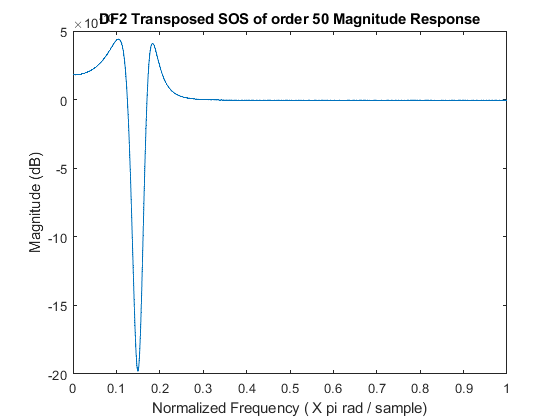 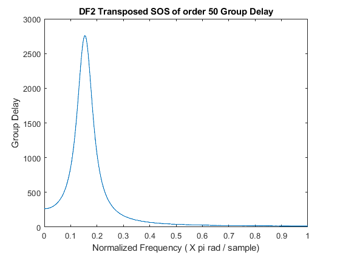 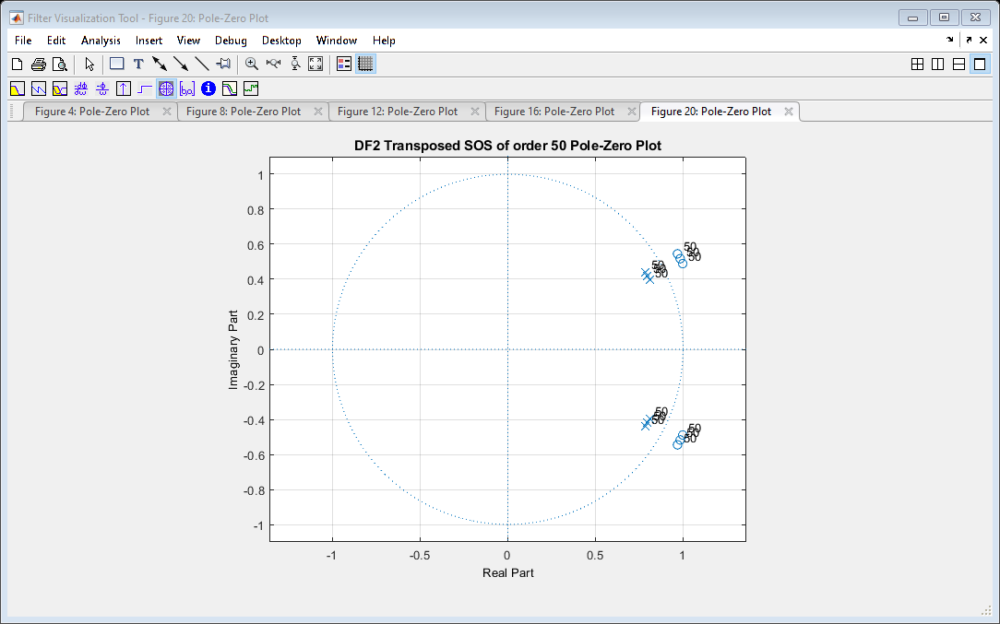 5
%DF1 sound_df1 = filter(hd_df1_new,speech); %DF1 SOS sound_df1sos = filter(hd_df1sos_new,speech); %DF2 SOS sound_df2sos = filter(hd_df2sos_new,speech); %DF2 Transposed SOS sound_df2tsos = filter(hd_df2tsos_new,speech); %choose any one of the direct forms to listen to soundsc(sound_df1,11025) audiowrite('distorted_sound.wav', sound_df1 , 11025)
Comments
%In terms of distortion the signal is obviously distorted. I can still %hear the sound but there is a consistent background sound %There are a few comments to be made. Looking at the pole-zero plot it is %obvious that the filter is all-pass. As a result the magnitude response of %the entire filter is controlled by the poles and zeros of the transfer %function. %Both group delay and magnitude response have increased with increasing %order likely resulting in phase distortion as well as attenuation.
Magnitude Response
%In the magnitude response, although the numbers are relatively low, there %is a significant drop at w = 0.15pi where the amplitude for this frequency %is amplified by -20e-10 ( at least as shown in all of the forms in (c) %with second order sections). There are other frequencies with change in %amplitude but not as significant. %If we are comparing, however, the filter of order 1 vs. order 50 we can %look at Direct Form I in (a) and (c). There is similarly a large drop at %w= 0.15pi but in this case we get something more noisy and peaks are %symmetric along x = 0. %In terms of magnitudes the drop in (a) has magnitude -6e-11 while that in %(c) has magnitude -3e-9 which is more than 10 times larger
Group Delay
%In looking at group delay there is a significant difference in magnitude %between (a) and (c). The group delay is centered around w = 0.15pi and in %looking at the difference between magnitudes at w = 0.15pi (a) has a %magnitude of approximately 55 while (c) has magnitudee of approximately %2750 (across all forms) resulting in a increase of about 5000%.
Final Conclusion
%In looking at the sound phase distortion is definitely more probable as group %delay has increased by about 5000% and the background sounds are not high %frequency (not sounding like ringing) and have equal intervals so the frequency components at or near w=0.15pi %must be getting delayed to achieve this sound.